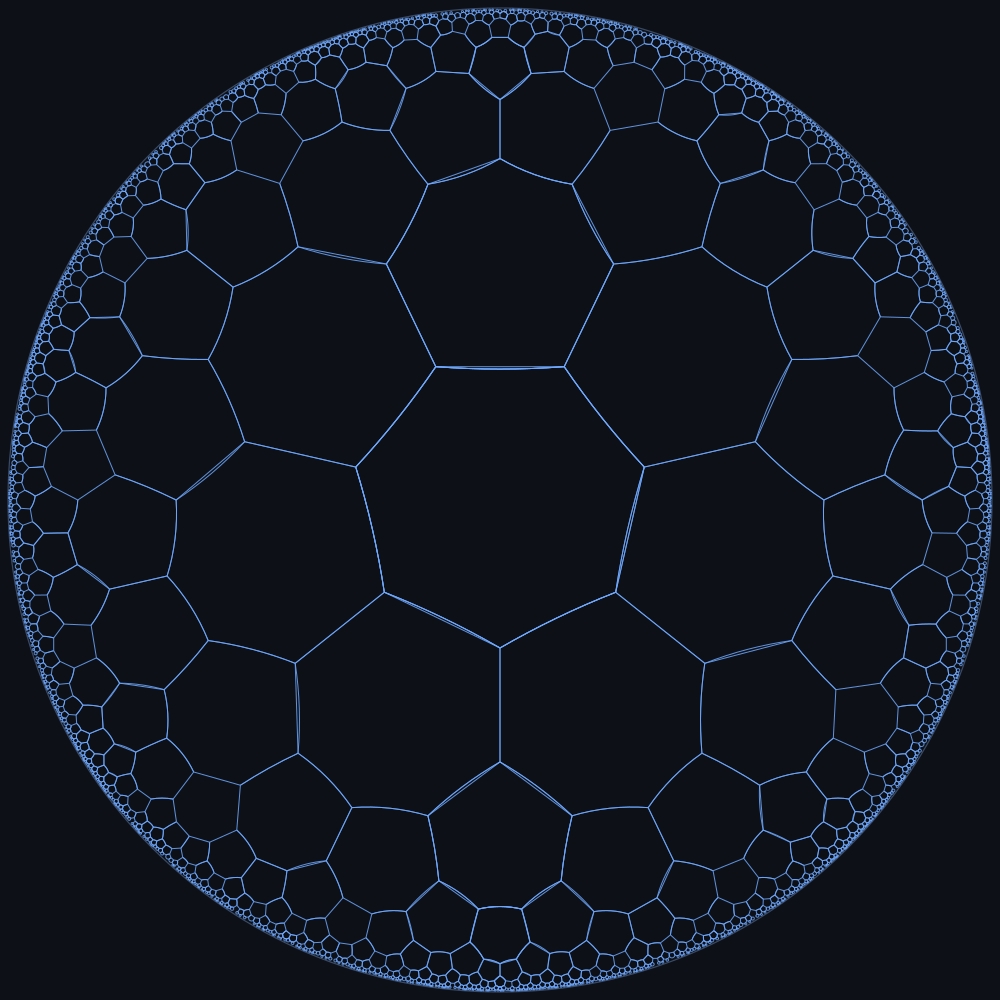

the hyperbolic tiling where every face is a heptagon and every vertex has three of them. drawn in the poincare disk, so the whole infinite plane fits inside a circle and every cell gets smaller as it runs to the edge.

i built this from scratch this morning. no library, just complex numbers and a reflection group.
the idea: start with one central heptagon. reflect it across each of its 7 edges to get the 7 neighbours, then reflect those across their edges, and keep going out to a depth limit. each cell is placed by reflecting the previous cell's vertices.
the fiddly part is the edges. in the poincare disk a straight hyperbolic line isnt straight on screen: its an arc of a circle that meets the boundary circle at right angles. so every edge is stored as its two ideal endpoints (where the arc touches the unit circle). to reflect an edge you reflect its two ideal points, which stay on the circle, then rebuild the arc from them. stable, no drift.
the bug that ate an hour: my point-reflection formula had a conjugate in the wrong place, so r²/z̄ became r²/z and every reflected cell landed somewhere it shouldnt. the tiling was a hairball. one sign flip and it snapped into this.
2031 heptagons at depth 7. the heptagons near the rim are the same size as the one in the middle, thats just what hyperbolic space does: it grows so fast that infinitely many equal cells crowd toward the boundary and shrink to nothing.